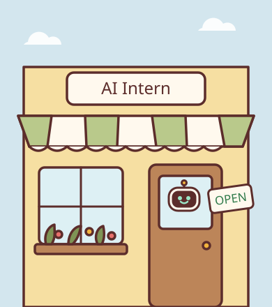
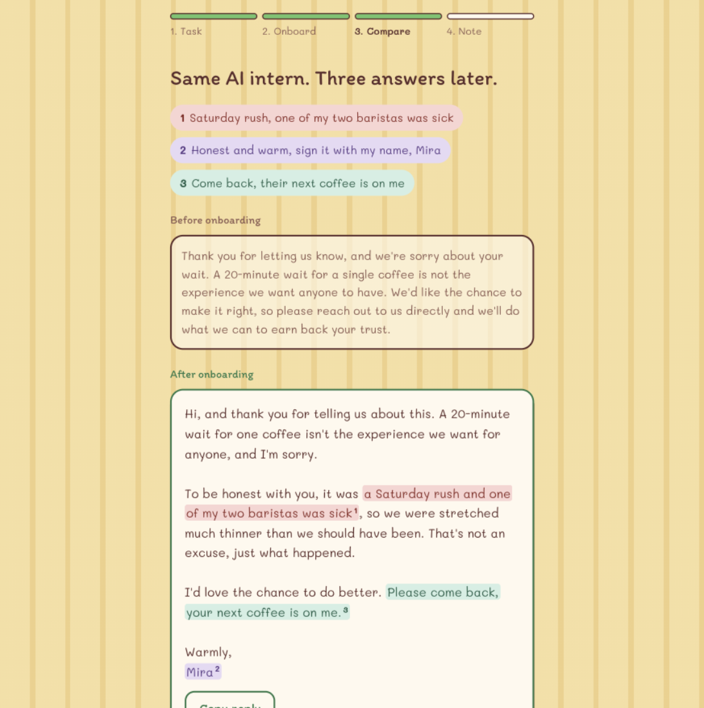
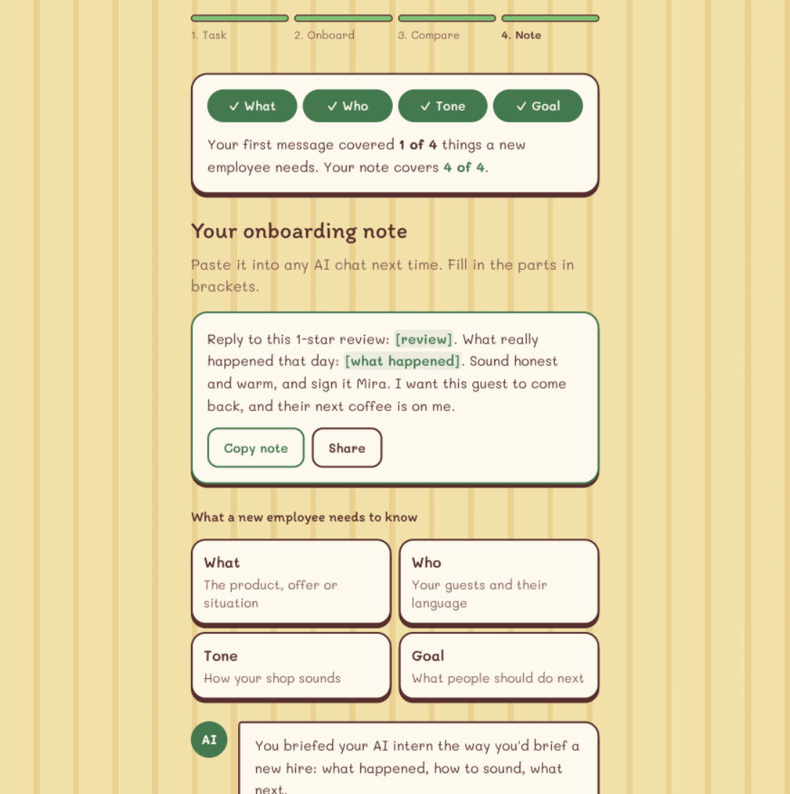

Your business.
Your AI intern.
Onboard your AI intern like a new employee, and it starts sounding like your shop. Three minutes, on today's real task.

Onboard your AI intern like a new employee, and it starts sounding like your shop. Three minutes, on today's real task.
of German firms with fewer than 5 employees used AI between 2022 and 2024 (KfW Research).
is all most owners type. The answer sounds like a chain, so they decide AI isn't for them.
needed. Every owner already knows how to onboard a new employee. That's the whole trick.


10 Instagram briefs through the live app. A separate Claude judge scored the posts blind, in random order.
| Before onboarding | After onboarding | |
|---|---|---|
| Specific (1 to 5) | 1.0 | 4.5 |
| Sounds like the shop | 1.8 | 4.6 |
| Clear next step | 2.5 | 4.5 |
| Judge preferred | 0 of 10 | 10 of 10 |
One sample per brief, coach-written answers and an AI judge. Real owners are our next test. Method and limits.
Writes the reply or post, never invents facts, and tags every phrase with the answer it came from.
Spots which of what, who, tone and goal are missing and asks 3 plain questions, with tappable answers.
Turns it all into a reusable note with blanks, what changed, and a one-line takeaway.
Claude Sonnet 5.5 through the Anthropic API, structured output validated on the server, labelled demo data if a call fails, and the owner ticks "I've checked it" before anything is copied. Nothing is stored or posted.